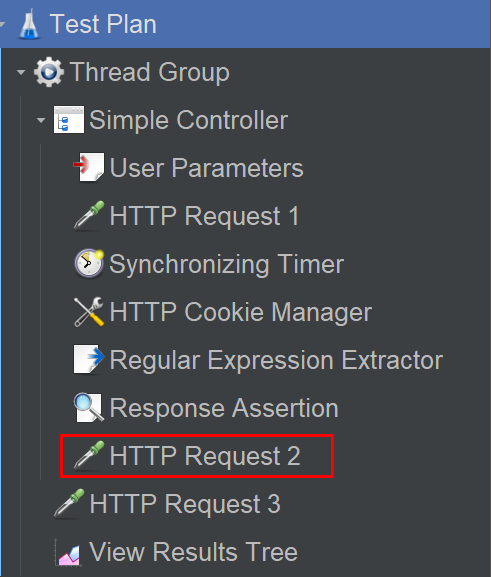
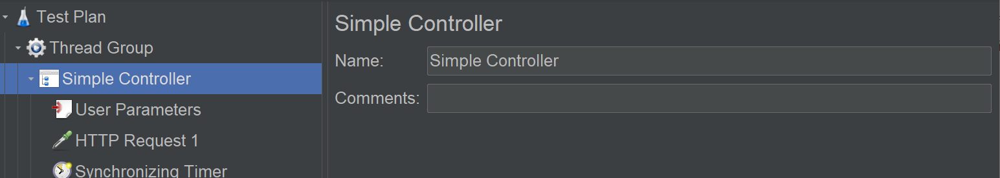
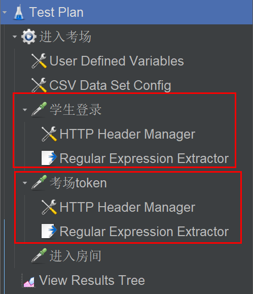

从一个问题说起
对于以下测试脚本：

为了能调用进入房间接口，需要从考场接口获取考场 token。为了调用考场接口，需要从登陆接口获取登陆 token。元件说明如下：
-
学生登录，提取登录
${token}传入下个接口参数。 -
添加 HTTP Header Manager：

-
考场 token，提取考场
${exam_token}传入下个接口参数。 -
添加 HTTP Header Manager：

-
进入房间
貌似挺合理，HTTP Header Manager 会给下方的接口添加请求头，运行结果真的如我们所料么？
运行顺序
在回答这个问题之前，有必要搞懂 JMeter 元件的运行顺序，它是由 2 个维度来决定的：从上往下和元件类型。
从上往下，即目录树从上往下。元件类型，分为 3 类：
- 线程组、逻辑控制器。
- 取样器。
- 配置元件、前置处理器、定时器、后置处理器、断言、监听器。
它们的运行顺序如下：
-
配置元件（如果存在）
-
前置处理器（如果存在）
-
定时器（如果存在）
-
取样器（如果存在）
-
后置处理器（如果存在且取样器的结果不为空）
-
断言（如果存在且取样器的结果不为空）
-
监听器（如果存在且取样器的结果不为空）
换句话说，假设我们新建了 1 个线程，想用这个线程去发请求。
第一步，初始化配置，比如参数化、设置 Header、Cookie 等，用到配置元件。
第二步，可能需要给线程加点参数，比如用户参数，用到前置处理器。
第三步，在发送请求前可能会等待一段时间，用到定时器。
第四步，发送请求，用到取样器。
第五步，可能需要提取响应数据，比如正则表达式提取器、JMESPath 提取器，用到后置处理器。
第六步，验证结果符合预期，用到断言。
第七步，查看请求响应数据和测试结果，用到监听器。
实践指南
对于以下所列元件：

JMeter 会按以下步骤运行：
- 线程组（如果有多个线程组可以在测试计划设置是顺序执行还是同时执行）
- 简单控制器（父节点）
- HTTP Cookie 管理器（配置元件）
- 用户参数（前置处理器）
- Synchronizing Timer（定时器）
- HTTP 请求 1（取样器）
- 正则表达式提取器（后置处理器）
- 响应断言（断言）
- HTTP Cookie 管理器（配置元件）
- 用户参数（前置处理器）
- Synchronizing Timer（定时器）
- HTTP 请求 2（取样器）
- 正则表达式提取器（后置处理器）
- 响应断言（断言）
- HTTP 请求 3（取样器）
- 察看结果树（严格来讲是与第 6 步并行，也就是取样器之后）
作用域
其中有个观察作用域实际效果的关键元件：HTTP 请求 2，它的前后并没有元件，但是也被作用上了。在 JMeter 中，同一层级的元件具有相同的作用域！
简单控制器是一个执行单元，本身没有内容，它的作用是把元件进行分组：

因为简单控制器通过分组给元件划分了层级，所以简单控制器下面的这些同层级元件，作用域相同，既会作用于 HTTP 请求 1，也会作用于 HTTP 请求 2。注意了！配置元件、前置处理器、定时器、后置处理器、断言、监听器，这六个组件，会作用到范围内的所有取样器。
除了同级作用域，还有上下级，JMeter 的上级作用域包含下级作用域，但是下级是不能作用到上级。比如 HTTP 请求 3，简单控制器下级的元件，是不会作用到 HTTP 请求 3 的。
回答开头的问题
HTTP Header Manager 是配置元件，会作用到范围内的所有取样器。这里有 2 个 HTTP Header Manager，都位于同一层级，它们会一起执行。在 JMeter 同一执行单元中，如果相同类型的元件有多个，那么它们会被当做一个一起执行！
测试一下，把最后一个 HTTP Header Manager 的 authorization 重命名为 authorization2，查看考场接口的 Headers：

两个 HTTP Header Manager 都作用上了。
为了避免混乱，在实际使用时建议：
- 根据先后顺序，从上往下合理的放置元件的顺序。
- 对于配置元件、前置处理器、定时器、后置处理器、断言这六类元件，它们都是为取样器服务的，如果只想作用于单个取样器，那么最好放在这个取样器的下级。
按照建议调整后的测试脚本如下：

User Defined Variables 和 CSV Data Set Config，是配置元件，且跟取样器同级，会同时作用到这 3 个取样器上面。
小结
本文开头引入了我在实际工作中碰到的问题，为了解决，先搞懂了 JMeter 元件运行顺序，然后参考了实践指南，发现了同一层级作用域相同这个原理，总结出了使用建议，配置元件、前置处理器、定时器、后置处理器、断言这六类元件，最好放在取样器的下级，调整后脚本如期运行。